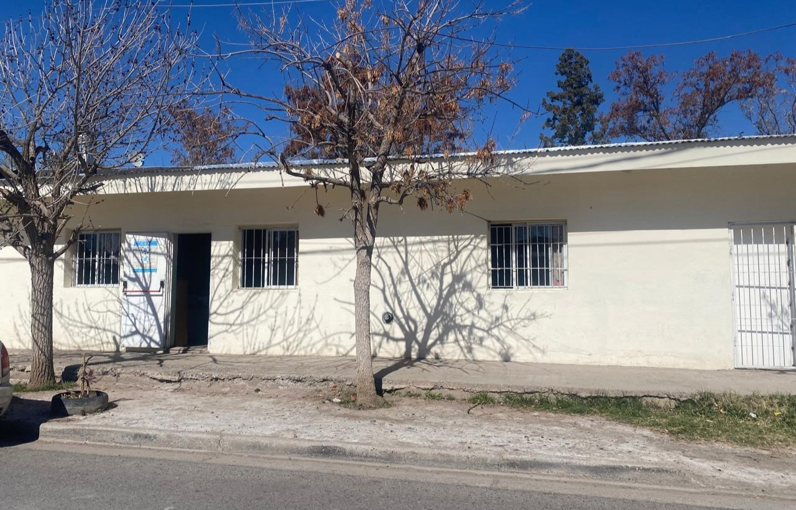

HORARIOS
- Lunes a viernes: de 8:00 a 15:00 hs.

El comedor San Lorenzo Sur funciona hace más de 30 años y brinda almuerzos a personas del barrio y alrededores. Asisten alrededor de 130 personas por día, que pueden quedarse a comer o llevar la comida a sus casas. Generalmente asisten personas mayores y familias, aunque pocos niños concurren al lugar. El comedor trabaja de lunes a viernes, de 8:00 a 15:00 hs, con un grupo de 8 trabajadores que dependen de la provincia. No cuentan con voluntarios. La provincia les entrega mercadería mensual, pero a veces no alcanza y ellos mismos aportan alimentos para continuar cocinando. En algunas ocasiones no pueden preparar comida por falta de insumos. Además de los almuerzos, también entregan ropa a las familias que lo necesitan.

Sra. Graciela